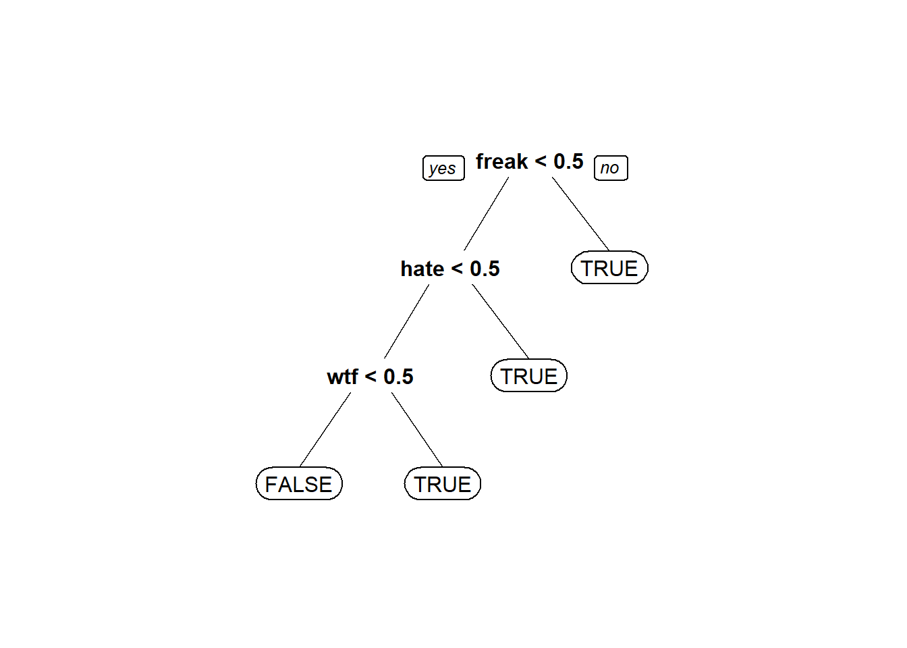

Unit 6 Text Analytics
6.1 Introduction to Text Analytics
6.1.1 Turning Tweets into knowledge
## 'data.frame': 1181 obs. of 2 variables:
## $ Tweet: chr "I have to say, Apple has by far the best customer care service I have ever received! @Apple @AppStore" "iOS 7 is so fricking smooth & beautiful!! #ThanxApple @Apple" "LOVE U @APPLE" "Thank you @apple, loving my new iPhone 5S!!!!! #apple #iphone5S pic.twitter.com/XmHJCU4pcb" ...
## $ Avg : num 2 2 1.8 1.8 1.8 1.8 1.8 1.6 1.6 1.6 ...tweets$Negative = as.factor(tweets$Avg <= -1) # Tweet is Negative if the sentiment score is less than -1
table(tweets$Negative)##
## FALSE TRUE
## 999 182library(tm)
library(SnowballC)
library(caTools)
#Convert tweets to Corpus (collection of documents)
corpus <- VCorpus(VectorSource(tweets$Tweet))
corpus## <<VCorpus>>
## Metadata: corpus specific: 0, document level (indexed): 0
## Content: documents: 11816.1.2 Preprocessing data
corpus <- tm_map(corpus, content_transformer(tolower))#Change all documents to lower case
corpus[[1]]$content## [1] "i have to say, apple has by far the best customer care service i have ever received! @apple @appstore"## [1] "i have to say apple has by far the best customer care service i have ever received apple appstore"## [1] "i" "me" "my" "myself" "we" "our"
## [7] "ours" "ourselves" "you" "your"corpus <- tm_map(corpus, removeWords, c("apple", stopwords("english"))) #Remove all english stopwords and apple
corpus[[1]]$content## [1] " say far best customer care service ever received appstore"## [1] "say far best custom care servic ever receiv appstor"#Word Frequency matrix, columns are unique words in dataset
frequencies <- DocumentTermMatrix(corpus)
frequencies #Wide matrix, sso lets inspect a selection## <<DocumentTermMatrix (documents: 1181, terms: 3289)>>
## Non-/sparse entries: 8980/3875329
## Sparsity : 100%
## Maximal term length: 115
## Weighting : term frequency (tf)## <<DocumentTermMatrix (documents: 6, terms: 11)>>
## Non-/sparse entries: 1/65
## Sparsity : 98%
## Maximal term length: 9
## Weighting : term frequency (tf)
## Sample :
## Terms
## Docs cheapen cheaper check cheep cheer cheerio cherylcol chief chiiiiqu child
## 1000 0 0 0 0 0 0 0 0 0 0
## 1001 0 0 0 0 0 0 0 0 0 0
...## [1] "android" "anyon" "app"
## [4] "appl" "back" "batteri"
## [7] "better" "buy" "can"
## [10] "cant" "come" "dont"
## [13] "fingerprint" "freak" "get"
## [16] "googl" "ios7" "ipad"
## [19] "iphon" "iphone5" "iphone5c"
## [22] "ipod" "ipodplayerpromo" "itun"
## [25] "just" "like" "lol"
## [28] "look" "love" "make"
...#Sparsity handling
sparse <- removeSparseTerms(frequencies, 0.995) #Remove terms that appear in less than 0.5%(approx. 16) of observations(tweets)
sparse## <<DocumentTermMatrix (documents: 1181, terms: 309)>>
## Non-/sparse entries: 4669/360260
## Sparsity : 99%
## Maximal term length: 20
## Weighting : term frequency (tf)tweetsSparse <- as.data.frame(as.matrix(sparse))
colnames(tweetsSparse) <- make.names(colnames(tweetsSparse))# Make all variable names R-friendly, R does not like numbers starting variable names
tweetsSparse$Negative <- tweets$Negative #Add negative column
#Split data for training and testing
set.seed(123)
split <- sample.split(tweetsSparse$Negative, SplitRatio = 0.7)
trainSparse <- subset(tweetsSparse, split==TRUE)
testSparse <- subset(tweetsSparse, split==FALSE)6.1.3 Build a CART model
library(rpart)
library(rpart.plot)
tweetCART <- rpart(Negative ~ ., data=trainSparse, method="class")
prp(tweetCART, roundint = FALSE)
predictCART <- predict(tweetCART, newdata=testSparse, type="class")
table(testSparse$Negative, predictCART)## predictCART
## FALSE TRUE
## FALSE 294 6
## TRUE 37 18## [1] 0.8788732##
## FALSE TRUE
## 300 55## [1] 0.8450704#Random Forest model
library(randomForest)
set.seed(123)
tweetRF <- randomForest(Negative ~ ., data=trainSparse)
# Make predictions:
predictRF <- predict(tweetRF, newdata=testSparse)
table(testSparse$Negative, predictRF)## predictRF
## FALSE TRUE
## FALSE 293 7
## TRUE 34 21## [1] 0.8845076.2 Recitation - The Story of Enron
Responsive emails are pertinent to the search query, marked by attorneys handling the case
## 'data.frame': 855 obs. of 2 variables:
## $ email : chr "North America's integrated electricity market requires cooperation on environmental policies Commission for Env"| __truncated__ "FYI -----Original Message----- From: \t\"Ginny Feliciano\" <gfeliciano@earthlink.net>@ENRON [mailto:IMCEANOTES-"| __truncated__ "14:13:53 Synchronizing Mailbox 'Kean, Steven J.' 14:13:53 Synchronizing Hierarchy 14:13:53 Synchronizing Favori"| __truncated__ "^ ----- Forwarded by Steven J Kean/NA/Enron on 03/02/2001 12:27 PM ----- Suzanne_Nimocks@mckinsey.com Sent by: "| __truncated__ ...
## $ responsive: int 0 1 0 1 0 0 1 0 0 0 ...## [1] "North America's integrated electricity market requires cooperation on environmental policies Commission for Environmental Cooperation releases working paper on North America's electricity market Montreal, 27 November 2001 -- The North American Commission for Environmental Cooperation (CEC) is releasing a working paper highlighting the trend towards increasing trade, competition and cross-border investment in electricity between Canada, Mexico and the United States. It is hoped that the working paper, Environmental Challenges and Opportunities in the Evolving North American Electricity Market, will stimulate public discussion around a CEC symposium of the same title about the need to coordinate environmental policies trinationally as a North America-wide electricity market develops. The CEC symposium will take place in San Diego on 29-30 November, and will bring together leading experts from industry, academia, NGOs and the governments of Canada, Mexico and the United States to consider the impact of the evolving continental electricity market on human health and the environment. \"Our goal [with the working paper and the symposium] is to highlight key environmental issues that must be addressed as the electricity markets in North America become more and more integrated,\" said Janine Ferretti, executive director of the CEC. \"We want to stimulate discussion around the important policy questions being raised so that countries can cooperate in their approach to energy and the environment.\" The CEC, an international organization created under an environmental side agreement to NAFTA known as the North American Agreement on Environmental Cooperation, was established to address regional environmental concerns, help prevent potential trade and environmental conflicts, and promote the effective enforcement of environmental law. The CEC Secretariat believes that greater North American cooperation on environmental policies regarding the continental electricity market is necessary to: * protect air quality and mitigate climate change, * minimize the possibility of environment-based trade disputes, * ensure a dependable supply of reasonably priced electricity across North America * avoid creation of pollution havens, and * ensure local and national environmental measures remain effective. The Changing Market The working paper profiles the rapid changing North American electricity market. For example, in 2001, the US is projected to export 13.1 thousand gigawatt-hours (GWh) of electricity to Canada and Mexico. By 2007, this number is projected to grow to 16.9 thousand GWh of electricity. \"Over the past few decades, the North American electricity market has developed into a complex array of cross-border transactions and relationships,\" said Phil Sharp, former US congressman and chairman of the CEC's Electricity Advisory Board. \"We need to achieve this new level of cooperation in our environmental approaches as well.\" The Environmental Profile of the Electricity Sector The electricity sector is the single largest source of nationally reported toxins in the United States and Canada and a large source in Mexico. In the US, the electricity sector emits approximately 25 percent of all NOx emissions, roughly 35 percent of all CO2 emissions, 25 percent of all mercury emissions and almost 70 percent of SO2 emissions. These emissions have a large impact on airsheds, watersheds and migratory species corridors that are often shared between the three North American countries. \"We want to discuss the possible outcomes from greater efforts to coordinate federal, state or provincial environmental laws and policies that relate to the electricity sector,\" said Ferretti. \"How can we develop more compatible environmental approaches to help make domestic environmental policies more effective?\" The Effects of an Integrated Electricity Market One key issue raised in the paper is the effect of market integration on the competitiveness of particular fuels such as coal, natural gas or renewables. Fuel choice largely determines environmental impacts from a specific facility, along with pollution control technologies, performance standards and regulations. The paper highlights other impacts of a highly competitive market as well. For example, concerns about so called \"pollution havens\" arise when significant differences in environmental laws or enforcement practices induce power companies to locate their operations in jurisdictions with lower standards. \"The CEC Secretariat is exploring what additional environmental policies will work in this restructured market and how these policies can be adapted to ensure that they enhance competitiveness and benefit the entire region,\" said Sharp. Because trade rules and policy measures directly influence the variables that drive a successfully integrated North American electricity market, the working paper also addresses fuel choice, technology, pollution control strategies and subsidies. The CEC will use the information gathered during the discussion period to develop a final report that will be submitted to the Council in early 2002. For more information or to view the live video webcast of the symposium, please go to: http://www.cec.org/electricity. You may download the working paper and other supporting documents from: http://www.cec.org/programs_projects/other_initiatives/electricity/docs.cfm?varlan=english. Commission for Environmental Cooperation 393, rue St-Jacques Ouest, Bureau 200 Montréal (Québec) Canada H2Y 1N9 Tel: (514) 350-4300; Fax: (514) 350-4314 E-mail: info@ccemtl.org ***********"## [1] 0corpus <- VCorpus(VectorSource(emails$email)) # Create corpus - collection of dcouments
corpus[[1]]$content #First email## [1] "North America's integrated electricity market requires cooperation on environmental policies Commission for Environmental Cooperation releases working paper on North America's electricity market Montreal, 27 November 2001 -- The North American Commission for Environmental Cooperation (CEC) is releasing a working paper highlighting the trend towards increasing trade, competition and cross-border investment in electricity between Canada, Mexico and the United States. It is hoped that the working paper, Environmental Challenges and Opportunities in the Evolving North American Electricity Market, will stimulate public discussion around a CEC symposium of the same title about the need to coordinate environmental policies trinationally as a North America-wide electricity market develops. The CEC symposium will take place in San Diego on 29-30 November, and will bring together leading experts from industry, academia, NGOs and the governments of Canada, Mexico and the United States to consider the impact of the evolving continental electricity market on human health and the environment. \"Our goal [with the working paper and the symposium] is to highlight key environmental issues that must be addressed as the electricity markets in North America become more and more integrated,\" said Janine Ferretti, executive director of the CEC. \"We want to stimulate discussion around the important policy questions being raised so that countries can cooperate in their approach to energy and the environment.\" The CEC, an international organization created under an environmental side agreement to NAFTA known as the North American Agreement on Environmental Cooperation, was established to address regional environmental concerns, help prevent potential trade and environmental conflicts, and promote the effective enforcement of environmental law. The CEC Secretariat believes that greater North American cooperation on environmental policies regarding the continental electricity market is necessary to: * protect air quality and mitigate climate change, * minimize the possibility of environment-based trade disputes, * ensure a dependable supply of reasonably priced electricity across North America * avoid creation of pollution havens, and * ensure local and national environmental measures remain effective. The Changing Market The working paper profiles the rapid changing North American electricity market. For example, in 2001, the US is projected to export 13.1 thousand gigawatt-hours (GWh) of electricity to Canada and Mexico. By 2007, this number is projected to grow to 16.9 thousand GWh of electricity. \"Over the past few decades, the North American electricity market has developed into a complex array of cross-border transactions and relationships,\" said Phil Sharp, former US congressman and chairman of the CEC's Electricity Advisory Board. \"We need to achieve this new level of cooperation in our environmental approaches as well.\" The Environmental Profile of the Electricity Sector The electricity sector is the single largest source of nationally reported toxins in the United States and Canada and a large source in Mexico. In the US, the electricity sector emits approximately 25 percent of all NOx emissions, roughly 35 percent of all CO2 emissions, 25 percent of all mercury emissions and almost 70 percent of SO2 emissions. These emissions have a large impact on airsheds, watersheds and migratory species corridors that are often shared between the three North American countries. \"We want to discuss the possible outcomes from greater efforts to coordinate federal, state or provincial environmental laws and policies that relate to the electricity sector,\" said Ferretti. \"How can we develop more compatible environmental approaches to help make domestic environmental policies more effective?\" The Effects of an Integrated Electricity Market One key issue raised in the paper is the effect of market integration on the competitiveness of particular fuels such as coal, natural gas or renewables. Fuel choice largely determines environmental impacts from a specific facility, along with pollution control technologies, performance standards and regulations. The paper highlights other impacts of a highly competitive market as well. For example, concerns about so called \"pollution havens\" arise when significant differences in environmental laws or enforcement practices induce power companies to locate their operations in jurisdictions with lower standards. \"The CEC Secretariat is exploring what additional environmental policies will work in this restructured market and how these policies can be adapted to ensure that they enhance competitiveness and benefit the entire region,\" said Sharp. Because trade rules and policy measures directly influence the variables that drive a successfully integrated North American electricity market, the working paper also addresses fuel choice, technology, pollution control strategies and subsidies. The CEC will use the information gathered during the discussion period to develop a final report that will be submitted to the Council in early 2002. For more information or to view the live video webcast of the symposium, please go to: http://www.cec.org/electricity. You may download the working paper and other supporting documents from: http://www.cec.org/programs_projects/other_initiatives/electricity/docs.cfm?varlan=english. Commission for Environmental Cooperation 393, rue St-Jacques Ouest, Bureau 200 Montréal (Québec) Canada H2Y 1N9 Tel: (514) 350-4300; Fax: (514) 350-4314 E-mail: info@ccemtl.org ***********"#Preprocess - Stemming, convert all to lower cap, removePunctuations and remove stopwords
corpus <- tm_map(corpus, content_transformer(tolower))
corpus <- tm_map(corpus, removePunctuation)
corpus <- tm_map(corpus, removeWords, stopwords("english"))
corpus <- tm_map(corpus, stemDocument)6.2.1 Bag of Words
## <<DocumentTermMatrix (documents: 855, terms: 22164)>>
## Non-/sparse entries: 102863/18847357
## Sparsity : 99%
## Maximal term length: 156
## Weighting : term frequency (tf)## <<DocumentTermMatrix (documents: 855, terms: 788)>>
## Non-/sparse entries: 51612/622128
## Sparsity : 92%
## Maximal term length: 19
## Weighting : term frequency (tf)labeledTerms = as.data.frame(as.matrix(dtm)) #make matrix data frame
labeledTerms$responsive = emails$responsive # Add responsive column from original data
#Building models
library(caTools)
set.seed(144)
spl <- sample.split(labeledTerms$responsive, 0.7)
train <- subset(labeledTerms, spl == TRUE)
test <- subset(labeledTerms, spl == FALSE)
#CART model
emailCART = rpart(responsive~., data=train, method="class")
prp(emailCART)#predictions
pred <- predict(emailCART, newdata = test)
table(test$responsive, pred[,2] >= 0.5) #Confusion matrix##
## FALSE TRUE
## 0 195 20
## 1 17 25## [1] 0.8560311library(ROCR)
predROCR = prediction(pred[,2], test$responsive)
perfROCR = performance(predROCR, "tpr", "fpr")#tpr - true positive rate, fpr- false postive rate
plot(perfROCR, colorize=TRUE)## [[1]]
## [1] 0.79363236.3 Assignment
6.3.1 Part 1 - Detecting Vandalism on Wikipedia
6.3.1.1 Problem 1 - Bag of Words
library(tm)
library(SnowballC)
library(caTools)
library(rpart)
library(rpart.plot)
library(ROCR)
wiki <- read.csv("week5/wiki.csv", stringsAsFactors=FALSE)
wiki$Vandal <- as.factor(wiki$Vandal)
#1.1 - How many cases of vandalism were detected in the history of this page?
table(wiki$Vandal) #1815##
## 0 1
## 2061 1815#1.2 Pre-processing and matrix creation
corpusAdded <- VCorpus(VectorSource(wiki$Added))
corpusAdded <- tm_map(corpusAdded, removeWords, stopwords("english")) #Remove all english stopwords
corpusAdded <- tm_map(corpusAdded, stemDocument)
dtmAdded <- DocumentTermMatrix(corpusAdded)
dtmAdded## <<DocumentTermMatrix (documents: 3876, terms: 6675)>>
## Non-/sparse entries: 15368/25856932
## Sparsity : 100%
## Maximal term length: 784
## Weighting : term frequency (tf)## <<DocumentTermMatrix (documents: 3876, terms: 166)>>
## Non-/sparse entries: 2681/640735
## Sparsity : 100%
## Maximal term length: 28
## Weighting : term frequency (tf)wordsAdded <- as.data.frame(as.matrix(sparseAdded))
colnames(wordsAdded) <- paste("A", colnames(wordsAdded))
#1.4 Repeat dbove steps for remove
corpusRemoved <- VCorpus(VectorSource(wiki$Removed))
corpusRemoved <- tm_map(corpusRemoved, removeWords, stopwords("english")) #Remove all english stopwords
corpusRemoved <- tm_map(corpusRemoved, stemDocument)
dtmRemoved <- DocumentTermMatrix(corpusRemoved)
sparseRemoved <- removeSparseTerms(dtmRemoved, 0.997)
wordsRemoved <- as.data.frame(as.matrix(sparseRemoved))
colnames(wordsRemoved) <- paste("R", colnames(wordsRemoved))
dim(wordsRemoved)## [1] 3876 162#1.5 - Combine datas frames and create test and training dataset
wikiWords <- cbind(wordsAdded, wordsRemoved)
wikiWords$Vandal <- wiki$Vandal
set.seed(123)
spl <- sample.split(wikiWords$Vandal, SplitRatio = 0.7)
trainWiki <- subset(wikiWords, spl==TRUE)
testWiki <- subset(wikiWords, spl==FALSE)
2061/(2061+1815) #baselinf accuacy## [1] 0.5317337#1.6 - CART model accuracy
wikiCART <- rpart(Vandal ~., data = trainWiki, method = "class")
vandalPred <- predict(wikiCART, newdata = testWiki, type = "class")
table(vandalPred, testWiki$Vandal)##
## vandalPred 0 1
## 0 618 533
## 1 0 12## [1] 0.54170256.3.1.2 Problem 2 - Problem specific knowledge
#2.1 - How many revisions added link(i.e. http)
wikiWords2 <- wikiWords
wikiWords2$HTTP <- ifelse(grepl("http",wiki$Added,fixed=TRUE), 1, 0)
table(wikiWords2$HTTP) #217##
## 0 1
## 3659 217Skipping the remaining questions, it’s just adding new variables and creating CART models with them included. Pretty repetitive.
6.3.2 Part 2 - Automating Reviews in Medicine
6.3.2.1 Problem 1 - Loading Data
## title abstract trial
## Length:1860 Length:1860 Min. :0.0000
## Class :character Class :character 1st Qu.:0.0000
## Mode :character Mode :character Median :0.0000
## Mean :0.4392
## 3rd Qu.:1.0000
## Max. :1.0000## [1] 3708## [1] 1126.3.2.2 Problem 2 - Preparing the Corpus
corpusTitle <- VCorpus(VectorSource(trials$title))
corpusAbstract <- VCorpus(VectorSource(trials$abstract))
corpusTitle <- tm_map(corpusTitle, content_transformer(tolower))#Change all documents to lower case
corpusTitle <- tm_map(corpusTitle, removePunctuation)
corpusTitle <- tm_map(corpusTitle, removeWords, stopwords("english")) #Remove all english stopwords
corpusTitle <- tm_map(corpusTitle, stemDocument)
dtmTitle <- DocumentTermMatrix(corpusTitle)
dtmTitle <- removeSparseTerms(dtmTitle, 0.95)
dtmTitle <- as.data.frame(as.matrix(dtmTitle))
corpusAbstract <- tm_map(corpusAbstract, content_transformer(tolower))#Change all documents to lower case
corpusAbstract <- tm_map(corpusAbstract, removePunctuation)
corpusAbstract <- tm_map(corpusAbstract, removeWords, stopwords("english")) #Remove all english stopwords
corpusAbstract <- tm_map(corpusAbstract, stemDocument)
dtmAbstract <- DocumentTermMatrix(corpusAbstract)
dtmAbstract <- removeSparseTerms(dtmAbstract, 0.95)
dtmAbstract <- as.data.frame(as.matrix(dtmAbstract))
#2.2 How many terms remain in dtmTitle after removing sparse terms
dim(dtmTitle)## [1] 1860 31## [1] 1860 335## patient
## 2126.3.2.3 Problem 3 - Building a model
colnames(dtmTitle) <- paste0("T", colnames(dtmTitle))
colnames(dtmAbstract) <- paste0("A", colnames(dtmAbstract))
dtm <- cbind(dtmTitle, dtmAbstract)
dtm$trial <- trials$trial
#.3.3 - Split data and get baseline mdoel accuracy
set.seed(144)
spl <- sample.split(dtm$trial, SplitRatio = 0.7)
train <- subset(dtm, spl==TRUE)
test <- subset(dtm, spl==FALSE)
table(train$trial)##
## 0 1
## 730 572## [1] 0.5606759## Min. 1st Qu. Median Mean 3rd Qu. Max.
## 0.05455 0.13636 0.28750 0.43932 0.78231 0.87189##
## FALSE TRUE
## 0 631 99
## 1 131 441## [1] 0.8018433## [1] 0.6923077## [1] 0.8876712## predT
## 0 1
## 0 261 52
## 1 83 162#4.2
predT <- predict(trialCART, newdata = test)
pred <- prediction(predT[,2], test$trial)
as.numeric(performance(pred, "auc")@y.values)## [1] 0.83710636.3.3 Part 3 - Separating Spam from Ham
6.3.3.1 Problem 1 - Loading the Dataset
#1.1 - Loading the Dataset
emails <- read.csv("week5/emails.csv", stringsAsFactors = F)
nrow(emails)## [1] 5728##
## 0 1
## 4360 13686.3.3.2 Problem 2 - Preparing the corpus
corpus <- VCorpus(VectorSource(emails$text)) # Create corpus - collection of dcouments
corpus <- tm_map(corpus, content_transformer(tolower))
corpus <- tm_map(corpus, removePunctuation)
corpus <- tm_map(corpus, removeWords, stopwords("english"))
corpus <- tm_map(corpus, stemDocument)
dtm <- DocumentTermMatrix(corpus)
dtm## <<DocumentTermMatrix (documents: 5728, terms: 28687)>>
## Non-/sparse entries: 481719/163837417
## Sparsity : 100%
## Maximal term length: 24
## Weighting : term frequency (tf)#2.3 - What is the word stem that shows up most frequently across all the emails in the dataset?
spdtm <- removeSparseTerms(dtm, 0.95)
spdtm## <<DocumentTermMatrix (documents: 5728, terms: 330)>>
## Non-/sparse entries: 213551/1676689
## Sparsity : 89%
## Maximal term length: 10
## Weighting : term frequency (tf)emailsSparse <- as.data.frame(as.matrix(spdtm))
colnames(emailsSparse) <- make.names(colnames(emailsSparse))
which.max(colSums(emailsSparse)) ## enron
## 926.3.3.3 Problem 3 - Building machine learning models
#3.1
emailsSparse$spam = as.factor(emailsSparse$spam)
set.seed(123)
spl <- sample.split(emailsSparse$spam, SplitRatio = 0.7)
train <- subset(emailsSparse, spl==TRUE)
test <- subset(emailsSparse, spl==FALSE)
spamLog <- glm(spam ~ ., data = train, family = "binomial")## Warning: glm.fit: algorithm did not converge## Warning: glm.fit: fitted probabilities numerically 0 or 1 occurredspamCART <- rpart(spam ~ ., data = train, method = "class")
library(randomForest)
spamRF = randomForest(spam~., data=train)
predTrainLog = predict(spamLog, type="response")
predTrainCART = predict(spamCART)[,2]
predTrainRF = predict(spamRF, type="prob")[,2]
table(predTrainLog < 0.00001)##
## FALSE TRUE
## 964 3046##
## FALSE TRUE
## 3056 954##
## FALSE TRUE
## 4000 10##
## Call:
## glm(formula = spam ~ ., family = "binomial", data = train)
##
## Deviance Residuals:
## Min 1Q Median 3Q Max
## -1.011 0.000 0.000 0.000 1.354
##
## Coefficients:
## Estimate Std. Error z value Pr(>|z|)
...##
## FALSE TRUE
## 0 3052 0
## 1 4 954## [1] 0.9990025